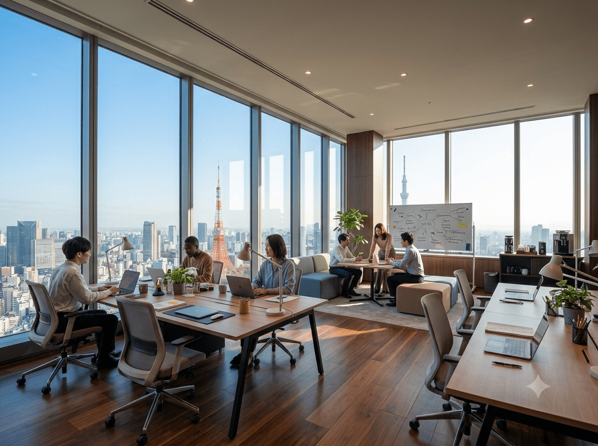
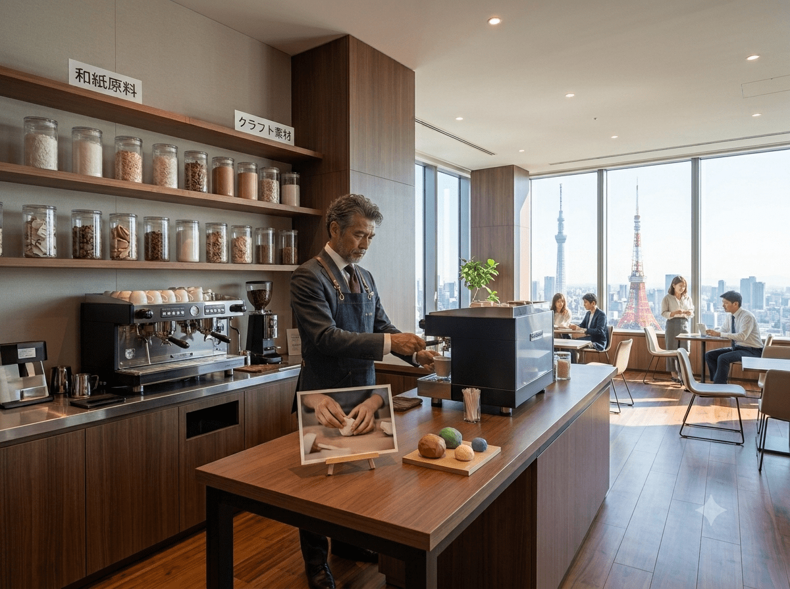
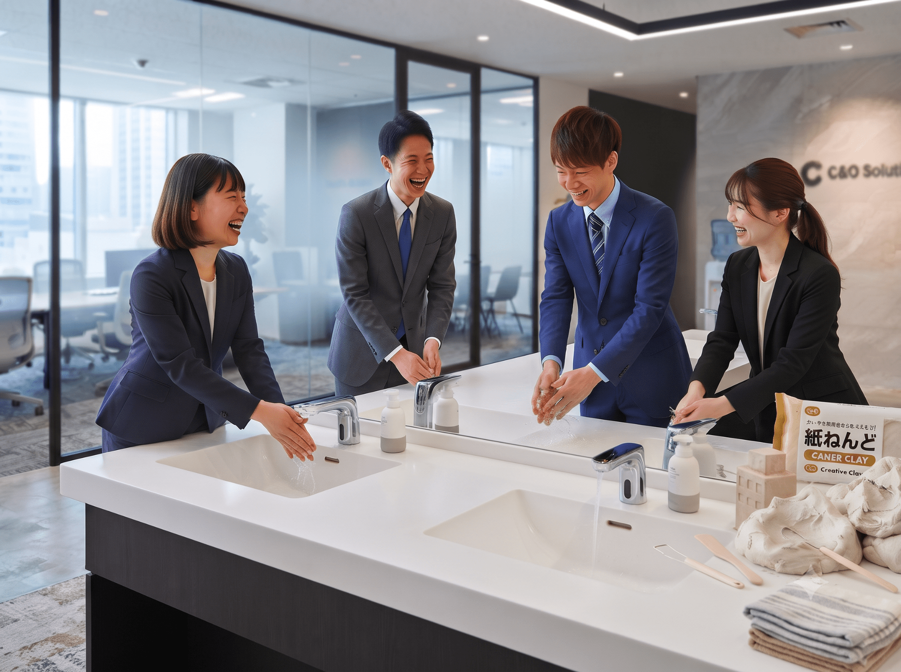

C&O Solutions
株式会社 C&O ソリューションズ
HISTORY（沿革）
- 2015年10月 株式会社C&Oソリューションズを設立
- 2016年03月 カフェ事業を開始
- 2018年07月 出版事業（『月刊紙ねんど』創刊）を開始
- 2021年04月 人材派遣（『おじさん派遣』）を開始
- 2024年11月 本社を現住所に移転
COMPANY PROFILE（会社概要）
| 会社名 | 株式会社C&Oソリューションズ |
|---|---|
| 代表取締役 CEO | 西園寺 顕彰 |
| 設立 | 2015年 10月 |
| 資本金 | 10,000,000円 |
| 所在地 | 東京都港区（タワーマンション内） |
| 事業内容 | ・カフェ事業・出版事業（月刊紙ねんど）・人材派遣（おじさん派遣） |
| 主要取引銀行 | 三井住友銀行 / みずほ銀行 |
CONCEPT
Companion & Object Solutions
「デジタルを超えた、手触りのあるソリューションを。」
私たちC&Oソリューションズの「C」はCompanion（伴走者）、「O」はObject（手触り）を意味します。
おじさん派遣・カフェ運営（Companion） と
月刊紙ねんど・CMメディア（Object）。
この2つの軸から、ロジックだけでは到達できない「確かな手触りのある変革」を貴社にもたらします。
代表挨拶
「—思い付き—が、世界を救う。」
現代のビジネス環境は目まぐるしく変化しています。そんな激動の時代において、私たちが最も大切にしているのは「ふとした思い付き」です。
株式会社C&Oソリューションズは、元々は「美味しいコーヒーが飲みたい」というふとした思い付きから始まったカフェ事業を原点としています。
その後、お客様の「紙ねんどって触ると落ち着くよね」「ベトベトしてるけどね」という会話を小耳にはさんで閃いた『月刊紙ねんど』の出版事業。
書籍やデジタルツールを超えた、手触りのある感動をお届けしてまいります。 そして、「困った時に頼れるおじさんが隣にいたら良くない？」というおじさんの独り言を耳にしてスタートした『おじさん派遣』事業を展開してまいりました。 一見すると支離滅裂に見えるこれらの事業ですが、すべては「ビジネスパーソンの孤独を癒やしたい」という偶然の思い付きから派生したトータル・ソリューションです。
私たちはこれからも、日常の無数の思い付きをカタチにし、あなたのビジネスと生活に不可解な安心感を思いついてまいります。
代表取締役 CEO 西園寺 顕彰 (Akiaki Saionji)
代表プロフィール
西園寺 顕彰（さいおんじ あきあき） / 代表取締役 CEO
大手IT企業にて多角的な概念の可視化および概念形成フェーズの伴走に従事したのち、2015年に株式会社C&Oソリューションズを設立、代表取締役に就任。
学生時代は「房総半島一周計画」の策定や「年間1,000冊読書」の目標設定など、常にスケールの大きな構想に情熱を傾ける。現在はその類稀なる構想力と独自のシナジーフレームワークを駆使し、カフェ・出版・人材派遣といった各領域において、概ね良い感じのニュアンスを与えるイノベーションを推進している。
趣味は、分厚い高級ノートを集めること（未記入）。座右の銘は「縦と横」。

東京都港区のタワーマンション内に構える本社オフィスは、自由な発想と高い生産性を生み出す洗練された眺望が魅力です。

バリスタが常駐するカフェカウンターや、『月刊紙ねんど』の最新素材が整然と並ぶクリエイティブラボを併設しています。

ベタついた手はこちらでスッキリ洗えます。